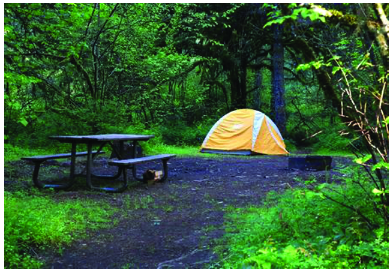
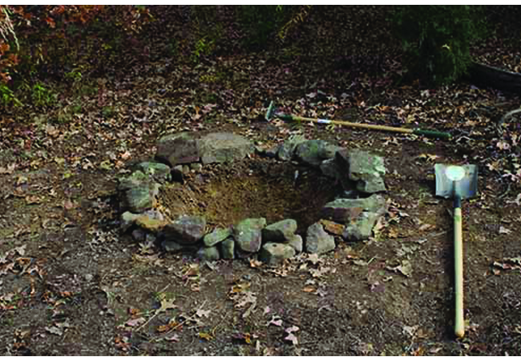
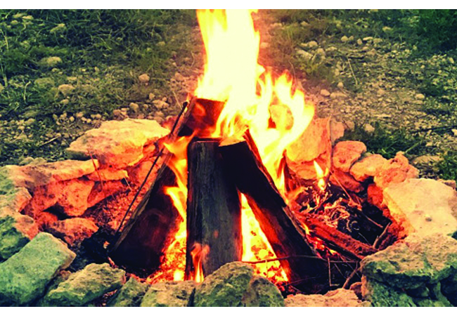
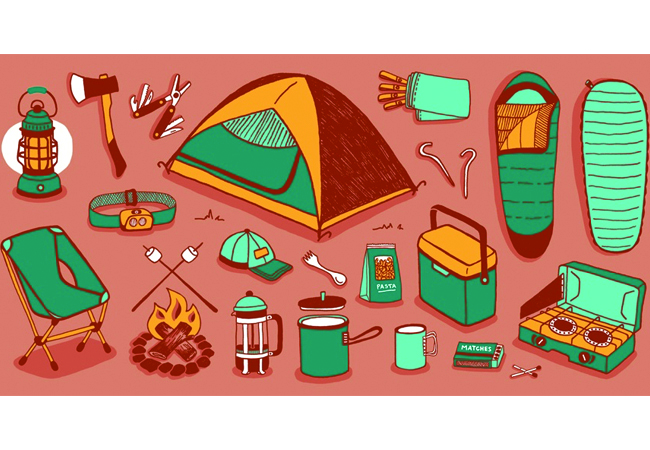

It can still be very peaceful and natural even with such amenities. Of course, if you feel that you need an even deeper escape from civilization, there are places for that as well.

Portland, Oregon
Portland, Oregon is a beautiful city close to a variety places with picturesque places to get away.
Durango, Colorado
Another remarkable place to visit with mountains and historical sites. Not a bad place to find mushrooms as well.

Making your own firepit requires a shovel and a pile of stones. First, dig a hole with the shovel. Then, add the stones all around the hole to prevent any of the wood and fire from falling out and burning the vegetation around.
Campfire Recipes
recipe name
main ingredient
serving
S'mores
marshmallow, chocolate, graham crackers
3
Cast-iron beans
onion, beans, tomatoes, garlic, hot dogs, and prefered seasonings
6
Glampfire cocktail
liquid smoke, whiskey, ginger, lemon juice, and honey
1
Grilled chocolate-chip sundae
baking spray, aluminum foil, cookie dough squares, ice cream, and hot fudge
1
Campfire nachos
ground beef, jalapeno, onion, chips, cheese, lettuce, tomato, and salsa
4
Camping Out is a resource site for anything from locations best for camping, what you will need to bring with you, saftey tips, and more!
Sometimes, all we crave is to get away. If you feel confident in your outdoor skills, this is the place to go. Not even necessary to have read Bushcraft 101. Just take a look a look at some of these places here on The best places to camp.
So, you have decided you want to try camping. How exciting! But where to start... 🔥🏔🏕 🏔🔥
Finding a Camp Ground
First things first, you must find a place to set up your tent. Many places have very convenient camp grounds that provide you with picnic tables and a place to make a fire. Some even have a restroom. It is all dependent on how close to nature you wish to get.
A Camp Fire

Nothing quite like sitting in front of a campfire. The smell of the wood burning, campfire coffee, and maybe some s'mores to snack on. Most campgrounds provide a firepit for you to use. If they don't, there are a few easy tricks to make a safe fire pit.
Tools for Camping

Nothing quite like being prepared for anything that comes your way. The best way for you to be prepared is to always expect the unexpected.